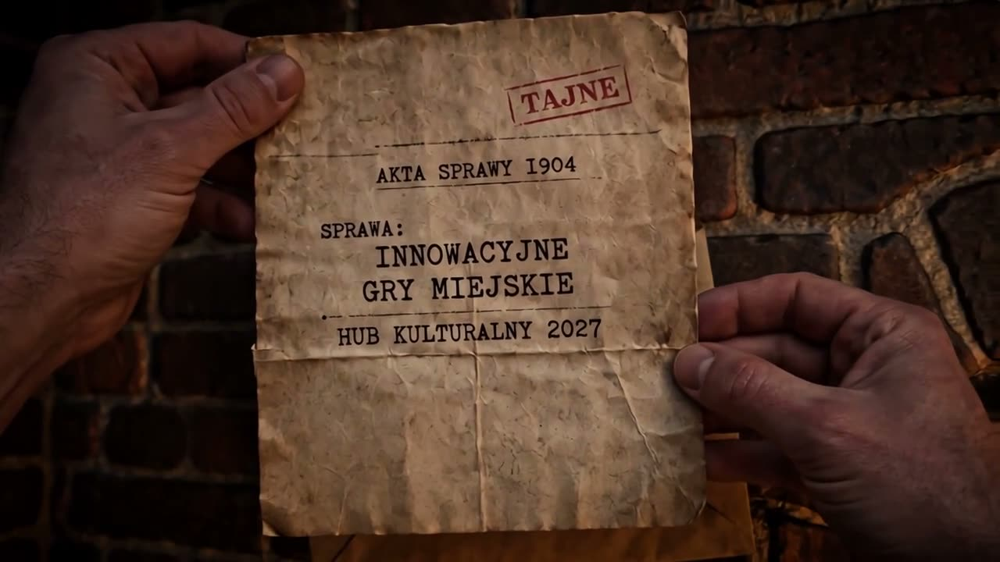
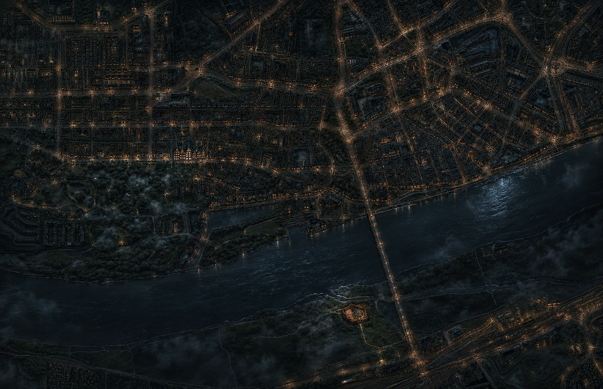

Interaktywne wyprawy miejskie
Toruń · demo platformy

Dotknij, żeby odtworzyć

mapa poglądowa
Styl karty i portalu
Jeden silnik, wiele narracji. Zmiana stylu przestawia cały portal — mapę, panele i nawigację. Ta sama platforma obsługuje wyprawę historyczną, badawczą i post-apokaliptyczną.
Karta postaci
Osiągnięcia
Ta sama ulica, którą mijają codziennie, nagle ma drugie dno. Mieszkaniec wraca do domu z historią, której nie znajdzie w żadnym przewodniku — i z osiągnięciem, które zostaje na koncie na kolejne sezony.
Toruń · sezon 2027
Co dostajecie w 2027
Trzy odsłony i konkurs dla mieszkańców, ogłoszony i rozstrzygnięty w tym samym roku. Każda odsłona to inny gatunek i osobna historia — przejść je można w dowolnej kolejności, a każda zaczyna się i kończy w Kulturalnym hubie.
Panel organizatora
Nie zbieracie danych na kartkach. Platforma liczy sama, a zestawienia są gotowe do sprawozdania w każdej chwili.
Kto co robi
Podział jest prosty i nie obciąża Waszego zespołu.
Wsparcie na miejscu w pierwszych dniach każdej odsłony.
Wyprawa nie znika po weekendzie otwarcia. Zostaje otwarta do końca sezonu i wraca w kolejnym — mieszkaniec przechodzi ją w dowolną sobotę, a katalog rośnie z roku na rok. Frekwencja kumuluje się zamiast zerować.